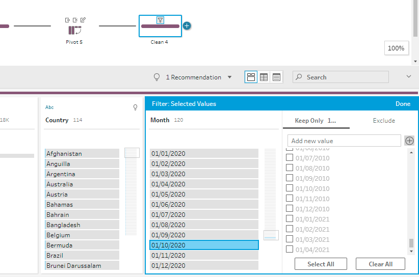
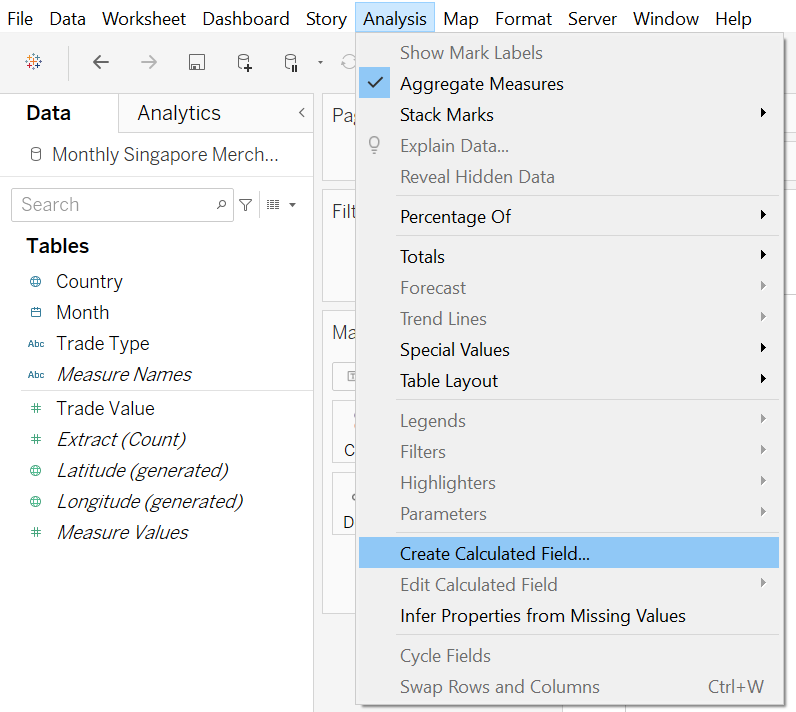
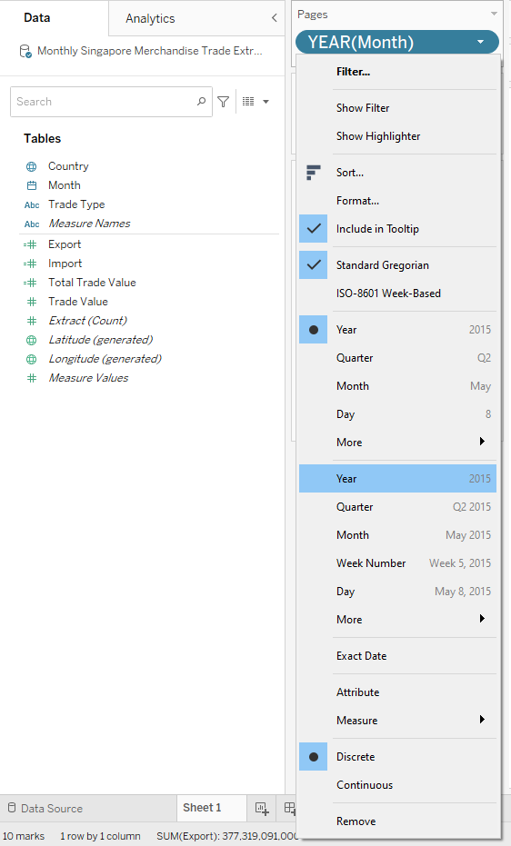
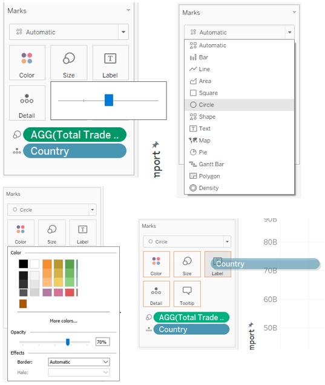
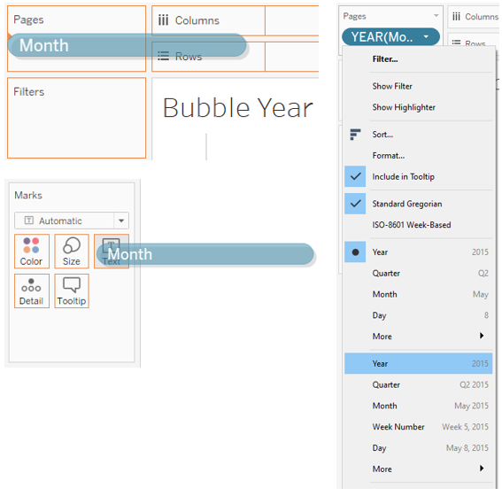
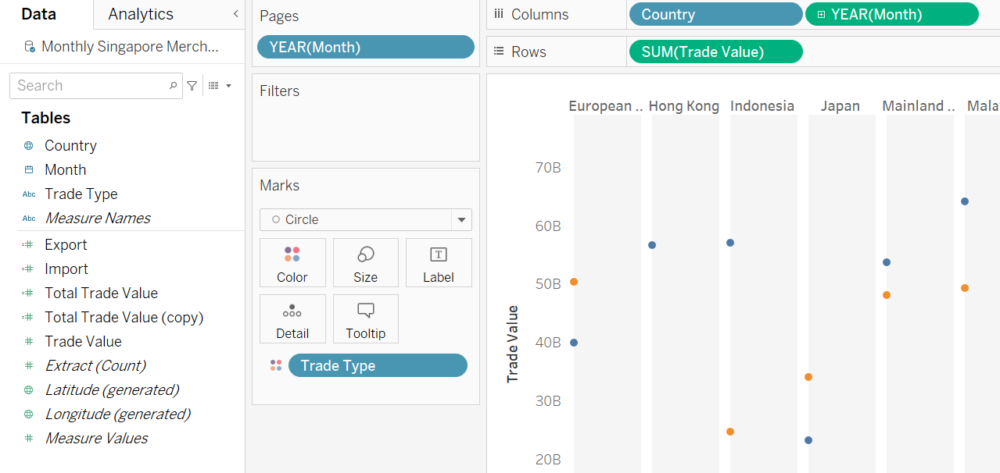
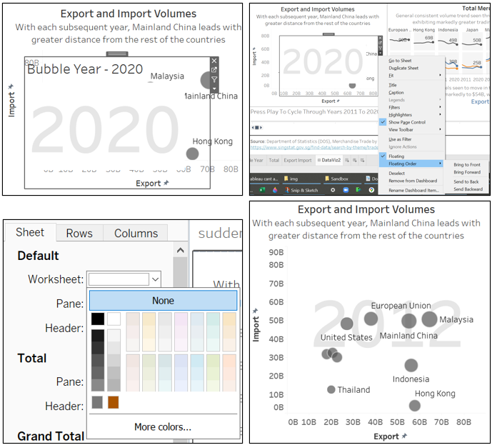

“Recasting Visualisation To Better Illuminate Underlying Insights (Again Using Data From Singapore’s Department Of Statistics)”
Author
Syed Ahmad Zaki
Published
June 8, 2021
1. Makeover Requirements
1.1. The Task
Critic the visualized graph with at least three points from each evaluation criterion (clarity and aesthetics) respectively.
Suggest alternative graphical presentation to improve the current design:
Proposed alternative data visualization must be in static form.
Proposed design would need to be sketched.
Support your design by describing the advantages or which part of the issue(s) your alternative design attempts to overcome.
Use Tableau to design the proposed data visualization.
Provide step-by-step description on how the data visualization was prepared.
Describe three major observations revealed by the prepared data visualization.
1.2. Deliverables
The study period should be between January 2011-December 2020. No additional data sets are required.
Focus on telling data story using appropriate statistical graphic methods, graphical design principles and interactive techniques, including animation.
2. Original Visualisation and Its Perceived Objective
The original visualization (shown below) showcases the merchandise trade, for both export and import, of ten of Singapore’s major trading partners in 2020.
Using the same methodology in our earlier DataViz Makeover 1, the intent of the visualisation would need to be defined first. We attempt the narrative for the above visualization, as follows:
“In 2020, each of our top ten trading countries (Mainland China, Malaysia, EU, United States, Taiwan, Japan, Republic of Korea, Indonesia, Hong Kong and Thailand) differ greatly in their respective export, import as well as total merchandise trade value.”
To further illuminate the narrative, we propose the following questions that the visualization aim to answer. Given the subject matter, these questions are very similar to those proposed in our earlier makeover:
What are the import and export levels in each of the top ten trading countries?
How do these import and export levels fluctuate over time?
Which countries are net exporter or net importer at varying periods in time?
Within the top ten countries, who has the highest and lowest import and export levels respectively?
(Additional) Do these fluctuations coincide with any event?
3. Critiquing Methodology
The methodology will remain the same as before, where we will assess on clarity and aesthetics.
4. Critique of Visualisation
4.1. Clarity:
Lack of proper scales on both x and y axis
Though each bubble has a merchandise trading amount, the x and y axis lacks such a scale. The values within both the merchandise trading amount and the xy axis does not match either. We’re unsure whether the scales refer to millions, billions or even kilograms.
Bottom insight does not match with the visualisation
The bottom insight made reference to the difference in Singapore’s standing between two separate trading partner from 2006 and 2009 respectively. The visualisation however shows the trading values only for the year 2020.
Axis names are misleading
‘Imports’,though situated near to the x-axis, actually refers to the y-axis, and vice-versa for the ‘Exports’ icon. The reader would need to take into account the wordings of ‘net importers’ and ‘net exporters’ to realise that the axis names are somewhat incorrectly placed.
4.2. Aesthetics:
Unnecessary colours for each country
The ten countries each have their own colour scheme to differentiate one from the other. Differentiation has already been achieved from the names of the countries within their respective infographic bubbles.
The bubbles hide behind each other
Similar sized bubbles seem to be grouped closely together. Naturally some would be hidden behind others. When the cursor hovers each bubble, the bubbles move forward to display the country name and merchandise trade value. The user wouldn’t have noticed the availability of such interactivity, given the design is very much like a static image.
The infographic bubbles take up too much space
The infographic bubbles indicating the name of the trading partner, as well as its total merchandise trade value take up far too much space within the small visualisation.
5. Alternative Design Considerations
5.1. Suggested Improvements
The use of the bubble chart as per the original visualisation will be continued, given the use of three continuous data (export, import and merchandise trade value). As such, the following suggestions are mere tweaks to the original visualisation:
Proper scales on both x and y axis
Rightly sized infographic bubbles (if needed)
Showing trade movements on and before 2020 (perhaps from 2011 onwards)
Right level of transparency to show location of bubbles as well as other overlapping bubbles
Seeing the bubble positions in other years before 2020
Being able to see the export, import and total merchandise trade over time
5.2. Finding Inspiration
While we intend to reuse the original bubble chart design, we scour the internet for inspiration!
The chart that comes to mind when comparing multiple countries across two continuous variable was Dr Hans Rosling’s famous charts on global trends. In his famous Ted talk, he covered two charts across a lengthy time frame: one chart covers the life expectancy in each country against its fertility rate, while the other chart covers the child survival rate in each country against its GDP per capita.
Separately, while the original bubble chart design will be reused, it’s not able to show the change across time. This infographic from Upslide below shows the right chart type to consider, based on the nature of data that needs to be presented. Though this infographic is meant for charts within Excel, its application is universal. From the infographic, the best chart to compare non-cyclical data over many periods is the line chart. Though we will use this as a complement to the bubble chart, we would need to have a solution of fitting lines for ten different countries in a visually appealing manner.
Yvan Fornes’s work on visualising ten different categories across ten years (2005 to 2014) seems an apt approach to follow, as we visualise ten different countries’ and their respective export and import volumes across 2011 to 2020.
5.3. Sketch
The following sketch strives to find common ground between the original visualisation and its critiques, as well as incorporating the inspirations above.
6. Proposed Tableau Visualisation
Click on this Tableau Public link to view the visualisation.
The Excel file contains the following three sheets:
Code
Sheet_Name <-c("Content","T1","T2")Description <-c("Explaining sheets T1 and T2 contain the “Merchandise Imports By Region/Market, Monthly” and “Merchandise Exports By Region/Market, Monthly” respectively","Contains the monthly merchandise imports by country/region in dollars (thousands for individual countries or millions for regions) spanning Jan-1976 to Apr-2021","Contains the monthly merchandise exports by country/region in dollars (thousands for individual countries or millions for regions) spanning Jan-1976 to Apr-2021")table1 <-data.frame(Sheet_Name,Description)knitr::kable(table1, booktabs =TRUE,caption ='Contents of Merchandise Trade Excel File')
Contents of Merchandise Trade Excel File
Sheet_Name
Description
Content
Explaining sheets T1 and T2 contain the “Merchandise Imports By Region/Market, Monthly” and “Merchandise Exports By Region/Market, Monthly” respectively
T1
Contains the monthly merchandise imports by country/region in dollars (thousands for individual countries or millions for regions) spanning Jan-1976 to Apr-2021
T2
Contains the monthly merchandise exports by country/region in dollars (thousands for individual countries or millions for regions) spanning Jan-1976 to Apr-2021
Unlike the earlier makeover, this makeover will utilise Tableau Prep Builder to prepare the data.
Code
No. <-c(1:19)Steps <-c("To bring the data into Tableau Prep Builder, first unzip the output folder. Then load the output Excel file into Prep Builder. Drag spreadsheet T1 into the main window. Rename T1 to Import and start the cleaning node.","To cleanly separate the country names, split the Variables column using the Custom Split and select \"(\".","After renaming this newly split column as Country, filter using Selected Values. Exclude Africa, America, Asia, Europe, Oceania and Total Merchandise Imports","Add a Pivot node to the Clean 1 node. To pivot just the dates, select all date values from 1976 Apr to 2021 Apr and drag to the central pane. ","Then change format to Date.","Rename to Month and Import (Thousand Dollars).","We will now replicate these same steps for the Export file. First, drag spreadsheet T2 into the main window.","Rename T2 to Export. Then copy both the Clean 1 and Pivot nodes and paste them next to the Export node","To connect these nodes together, drag the Export node to the Clean 1(1) node over the Add function.","Since these are export values, replace the Import (Thousand Dollars) to Export (Thousand Dollars) in the Pivot 1(1) node.","To combine both the Import and Export data, drag Pivot 1 to Pivot 1(1) to create a new Join node.","Within the Join Clauses, match both the Country and Month columns to each other. Ensure that the full Join Type is selected.","Attach a new Clean node to the Join 1 node. Since there are duplicate columns, merge both Month columns first. Then merge both Country columns.","We will now need to pivot the export and import fields. We will add a Pivot node to the Clean 3 node. We then drag the Export and Import columns into the centre pane.","We will extract out just the Export and Import words, through the use of the Automatic Split. The newly created column will be renamed as Trade Type.","Most of the trade value are in thousands. We now need to convert this to its proper format. Taking into account that European Union is the only trading partner whose trade value is in the millions, we will create a calculated field using the following formula.","To limit our timeframe, we will add a Clean node. We will then keep only the months between 2011 to 2020.","At the same time, we will select our countries of choice by keeping these ten countries using the Filter function.","After keeping only the Trade Value, Trade Type, Country and Month columns, we will then add the Output node. Save the file in a Tableau hyper format for use in Tableau Desktop.")Screenshots <-c("img/a.png","img/b.png","img/de.png","img/f.png","img/g.png","img/h.png","img/i.png","img/j.png","img/k.png","img/l.png","img/m.png","img/n.png","img/o.png","img/p.png","img/q.png","img/r.png","img/s.png","img/t.png","img/u.png")table2 <-data.frame(No.,Steps,Screenshots)# Add appropriate rmarkdown taggingtable2$Screenshots =sprintf("", table2$Screenshots)knitr::kable(table2, booktabs =TRUE,caption ='Data Preparation Steps Using Tableau Prep Builder')
Data Preparation Steps Using Tableau Prep Builder
No.
Steps
Screenshots
1
To bring the data into Tableau Prep Builder, first unzip the output folder. Then load the output Excel file into Prep Builder. Drag spreadsheet T1 into the main window. Rename T1 to Import and start the cleaning node.
2
To cleanly separate the country names, split the Variables column using the Custom Split and select “(”.
3
After renaming this newly split column as Country, filter using Selected Values. Exclude Africa, America, Asia, Europe, Oceania and Total Merchandise Imports
4
Add a Pivot node to the Clean 1 node. To pivot just the dates, select all date values from 1976 Apr to 2021 Apr and drag to the central pane.
5
Then change format to Date.
6
Rename to Month and Import (Thousand Dollars).
7
We will now replicate these same steps for the Export file. First, drag spreadsheet T2 into the main window.
8
Rename T2 to Export. Then copy both the Clean 1 and Pivot nodes and paste them next to the Export node
9
To connect these nodes together, drag the Export node to the Clean 1(1) node over the Add function.
10
Since these are export values, replace the Import (Thousand Dollars) to Export (Thousand Dollars) in the Pivot 1(1) node.
11
To combine both the Import and Export data, drag Pivot 1 to Pivot 1(1) to create a new Join node.
12
Within the Join Clauses, match both the Country and Month columns to each other. Ensure that the full Join Type is selected.
13
Attach a new Clean node to the Join 1 node. Since there are duplicate columns, merge both Month columns first. Then merge both Country columns.
14
We will now need to pivot the export and import fields. We will add a Pivot node to the Clean 3 node. We then drag the Export and Import columns into the centre pane.
15
We will extract out just the Export and Import words, through the use of the Automatic Split. The newly created column will be renamed as Trade Type.
16
Most of the trade value are in thousands. We now need to convert this to its proper format. Taking into account that European Union is the only trading partner whose trade value is in the millions, we will create a calculated field using the following formula.
17
To limit our timeframe, we will add a Clean node. We will then keep only the months between 2011 to 2020.

18
At the same time, we will select our countries of choice by keeping these ten countries using the Filter function.
19
After keeping only the Trade Value, Trade Type, Country and Month columns, we will then add the Output node. Save the file in a Tableau hyper format for use in Tableau Desktop.
6.2. Data Visualisation
Having prepared the data, we will now utilize Tableau Desktop for the eventual visualisation.
Code
No. <-c(1:32)Steps <-c("Launch Tableau Desktop by double-clicking on the newly created hyper file. You should get this view. To start creating the first chart (bubble chart), let's click on Sheet 1 at the bottom.","We will need to create a few Calculated Fields. To create the first calculated field, click on the Analysis tab, and choose Calculated Field from the dropdown menu.","First we need to separate the export and import values. We create a calculated field and then rename to Export. Then enter the following formula: IF [Trade Type] = \"Export\" THEN [Trade Value] END. Ensure that there is a remark indicating that the calculation is valid. Then click OK. To repeat the same step for Import, create a calculated field and then rename to Import. Enter the following formula: IF [Trade Type] = \"Import\" THEN [Trade Value] END. Thereafter, click OK.","Our last calculated field for this chart will be to create a total trade value, combining both export and import. Name this calculated field as Total Trade Value. Enter the following formula: SUM([Export])+SUM([Import])","Drag Export to Columns, Import to Rows, Country to Detail Marks and Total Trade Value to Size Marks.","To mimic Hans Rosling's yearly animation, we will then drag Month to Pages. Then right-click this and choose Cumulative Year.","To switch on the animation feature, select the Format tab, and choose Animations from the dropdown menu. Then select On.","To fix the axis ranges as the animation plays, first right-click on the vertical Import axis. Choose Edit Axis. Then select Fixed Range and enter 0 and 90,000,000,000. Repeat the same step for the horizontal Export axis by right-clicking on it.","To format the bubbles accordingly, we first resize them by clicking on the Size marks and choosing the centre. Then we change the marks type, by clicking on Automatic and choosing Circle. This will allow us to have a fill colour. To colour this circle, click on the Color marks and choose a dark grey tone (HTML #555555) Within the same window, choose 70% opacity. Overlapping circles will now be seen easily, compared to full opacity. Lastly, to include the Country names to each bubble, drag Country to the Label marks.","A few more formatting to go before we're done with the bubble chart. To remove the gridlines, select the Format tab and click on Lines from the dropdown menu. Within the Rows tab, select None within the Grid Lines. Repeat this step for the Columns tab. To rename the Title, right-click on the Title and select Edit Title. Enter the following phrase. Then select OK.","Dr Hans Rosling's bubble chart featured a large Year label in the centre. We would need to first create this Year label in a separate worksheet and then bring it in during our dashboard stage. First, create a new worksheet, and rename it Bubble Year. Then drag Month to Pages. Then right-click this and choose Cumulative Year. Again drag Month to the Text Marks. Then again, right-click this and choose Cumulative Year.","To realign to middle centre, click on the Text marks. Select Alignment and choose centre of both Horizontal and Vertical alignments. Next to adjust the font colour and size, right-click on the Year(Month) text mark and choose Format. Then choose font size 72, light grey colour (HTML #e6e6e6) and bold. Then lastly, to remove the title, right-click on the Title and select Hide Title.","Now we would need to create a line graph for Total Trade Value. First create a new worksheet and name it Total. Then drag Country and Month to Columns, and Total Trade Value to Rows. Change the date format by right-clicking on Month and choosing Cumulative Year. Drag Month to Pages and repeat the date format change.","Next choose Circle marks. To add labels, drag Total Trade Value to the Text marks. Since the label is too long, right-click on the Total Trade Value text marks and select Format. Within the Numbers dropdown menu, select Number (Custom). Choose zero decimal places and display units as billions.","Click on Format Borders to remove unnecessary lines on the graph. Within the Sheet tab, select None for both the Column and Row Divider. Then select Format Lines, and select None for Grid Lines within the Rows tab.","To give a nice background shade per country, we will add a reference line. Right-click on the horizontal year axis and choose Add Reference Line. From the top, choose Band and Entire Table as Scope. Then for Band From, choose Constant, and 1st Jan 2011 as its Value. Choose None for Label. Then for Band To, choose Constant, and 1st Dec 2020 as its Value. Choose None for Label. Lastly for the Fill, choose a light grey colour (HTML #f5f5f5).","To hide all unnecessary wordings, we start with right-clicking on the Title and Hide Title. Next we will remove the vertical axis by right-clicking on it and unchecking Show Header. Next we will remove the word Country by right-clicking on it and selecting Hide Field Labels for Columns. Lastly to remove the horizontal axis, right-click on it and uncheck Show Header.","To bold the Country name font, right-click on the country and click on Format. Then choose Bold. Separately, change the colour of the circle by selecting on the Color mark and choosing a dark grey colour (HTML #555555).","To ensure that animation applies to this chart, select the Format tab and click on Animations from the dropdown menu. On the right hand side of the chart, an animation pane would appear. Select a Fast speed, check the Show History box, and then click the down arrow button to reveal more options. Select All Marks To Show History For, and show Both marks and trails. You can then play this animation to see how the circles moves across the years.","Now let's finalise its tooltip. Since our intention is to show more digits in the tooltip than on axis, we will need to duplicate the total trade value. First, right-click on the Total Trade Value and select Duplicate. Then drag this Total Trade Value (copy) to the Tooltip marks, together with Export and Import. Then click on the Tooltip marks. Remove the sentence with Year(Month)(2). And then insert AGG(Total Trade Value(copy)) just beside the sentence of Total Trade Value. Add two more sentences (Total Export and Total Import) and insert their respective fields.","Now we would need to create a similar line chart for both Export and Import. Duplicate the sheet Total and rename it as Export Import. Remove AGG(Total Trade Value) from Rows, as well as the Label and Tooltip marks. Then drag Trade Value to Rows, and Trade Type to the Colour marks.","Next to add labels, drag Trade Value to the Text marks. The labels do not appear, since it is too long. We would need to shrink the labels for it to appear. First right-click on the Trade Value text marks and select Format. Within the Numbers dropdown menu, select Number (Custom). Choose zero decimal places and display units as billions.","Next we will need to have the horizontal annual axis reappear, while all other axis and titles would need to be hidden. First, right-click on the Year(Month) on the Columns and Show Header. To remove the repeated Year of Month, right-click on the horizontal annual axis and select Edit Axis. Within the General tab, remove Year of Month within the Title of Axis Titles. Then to just show 2011 and 2020 within the axis, select the Tick Marks tab. Under the Major Tick Marks, select Fixed and choose 1st Jan 2011 and 9 Years interval.","To finalise the tooltip, we would need to create a calculated field to indicate whether the line is an Export or Import line. We create a calculated field named Custom TT, and enter the following formula: IF ISNULL([Import]) THEN \"Export\" ELSE \"Import\" END. Then drag Custom TT to the Tooltip marks. Also, drag Export and Import into the Tooltip marks. Then click on the Tooltip marks. Type Total and then insert ATTR(Custom TT). Press Tab on the keyboard and insert both Sum(Export) and Sum(Import). Then click OK.","Now we're ready to create the dashboard. First, create a new dashboard and name it DataViz2. To ensure that our dashboard fits all screen resolutions, we will need to click on Size and choose Automatic. We will then make use of containers to right size our dashboard. The plan is to have three horizontal containers stacked on top of each other. First, drag the Vertical container into the main window. Then drag the Horizontal container over the lower half of the main window such that it gets highlighted. Next drag the Vertical container over the lowest quarter of the main window such that this too gets highlighted. Now we have three horizontal containers, of which the top and bottom are of a vertical nature and the middle is of a horizontal nature. For easy reference, any box with blue boundaries are containers, whereas any box with green boundaries are charts.","Drag the Bubble worksheet to the middle container. Then drag a Vertical container to the right of this Bubble chart. Drag Total into this Vertical container, and then drag Import Export just below this Total chart.","Within the top container, remove Total Trade Value, Year of Month (2020) and Trade Type. Drag Text box to just below the remaining Year of Month within the top container and enter the following text. Resize to font size 16 and bold. Then drag the Year of Month from the top container to the bottom.","Now let's focus on the top container. Let's drag another text box as the sub-Title below the earlier Title. Enter your short paragraph and enlarge font size to 12. We create a line separator by dragging another text box below this sub-title. Without entering any text, click OK. Reduce its Outer Padding to zero, and select its background colour as dark grey (HTML #555555). We then right-click on this text box and Edit Height to 3 pixels.","For the bottom container, drag a Horizontal container below the Year of Month. To create another line separator, drag a Text Box in between this Year of Month and the Horizontal container. Without entering any text, click OK. Reduce its Outer Padding to zero, and select its background colour as dark grey (HTML #555555). We then right-click on this text box and Edit Height to 3 pixels. Below this line, drag a Text Box. Enter details on the source of the data. Drag another Text Box to the right of this data source text box. Enter the reason for this dashboard. Your eventual bottom container should look like this.","For the middle right container. hide both Titles (Total and Export Import). For the Trade Value chart, we'll remove the country names by right-clicking on it and unchecking Show Header. Then remove the vertical Trade Value axis by right-clicking on it and uncheck Show Header. Your eventual arrangement should look like this picture on the right. To create a Title above the top line chart, drag a Text box just above the Country Names. Enter commentary below the Total Merchandise Trade Volumes and click OK. To create a Title below the bottom line chart, drag another Text box below the years. Enter commentary on the Export and Import Volumes. Colour the words Export and Import according to its respective lines (HTML #4e79a7 and #f28e2b). Your arrangement should now look like the picture on the right.","Now focusing our attention on the animation bar. Drag a Text box above this animation bar to provide instructions to the viewer that the charts can be played with this animation bar. Input the necessary instructions in this text, and click OK. Then right-click on the animation bar. Uncheck Show Title, Show Page Readout and Show History Controls. Your animation bar should now look like this pic.","Lastly, while pressing on the Shift button, drag Bubble Year to just above the Bubble Chart. Remove its Title by right-clicking on it and uncheck Show Header. Then to move it behind the Bubble Chart, right-click on it, move to Floating ORder and select Send to Back. The reason why you can no longer see the Bubble Year, is due to a white background within the Bubble Chart. Right-click on Bubble chart and select Format. Change the colour of the Fill worksheet to None. Your chart should now look like this.")Screenshots <-c("img/1.png","img/2.png","img/3.png","img/4.png","img/5.png","img/6.png","img/7.png","img/8.png","img/9.png","img/10.png","img/11.png","img/12.png","img/13.png","img/14.png","img/15.png","img/16.png","img/17.png","img/18.png","img/19.png","img/20.png","img/21.png","img/22.png","img/23.png","img/24.png","img/25.png","img/26.png","img/27.png","img/28.png","img/29.png","img/30.png","img/31.png","img/32.png")table3 <-data.frame(No.,Steps,Screenshots)# Add appropriate rmarkdown taggingtable3$Screenshots =sprintf("", table3$Screenshots)knitr::kable(table3, booktabs =TRUE,caption ='Data Visualisation Steps Using Tableau Desktop')
Data Visualisation Steps Using Tableau Desktop
No.
Steps
Screenshots
1
Launch Tableau Desktop by double-clicking on the newly created hyper file. You should get this view. To start creating the first chart (bubble chart), let’s click on Sheet 1 at the bottom.
2
We will need to create a few Calculated Fields. To create the first calculated field, click on the Analysis tab, and choose Calculated Field from the dropdown menu.

3
First we need to separate the export and import values. We create a calculated field and then rename to Export. Then enter the following formula: IF [Trade Type] = “Export” THEN [Trade Value] END. Ensure that there is a remark indicating that the calculation is valid. Then click OK. To repeat the same step for Import, create a calculated field and then rename to Import. Enter the following formula: IF [Trade Type] = “Import” THEN [Trade Value] END. Thereafter, click OK.
4
Our last calculated field for this chart will be to create a total trade value, combining both export and import. Name this calculated field as Total Trade Value. Enter the following formula: SUM([Export])+SUM([Import])
5
Drag Export to Columns, Import to Rows, Country to Detail Marks and Total Trade Value to Size Marks.
6
To mimic Hans Rosling’s yearly animation, we will then drag Month to Pages. Then right-click this and choose Cumulative Year.

7
To switch on the animation feature, select the Format tab, and choose Animations from the dropdown menu. Then select On.
8
To fix the axis ranges as the animation plays, first right-click on the vertical Import axis. Choose Edit Axis. Then select Fixed Range and enter 0 and 90,000,000,000. Repeat the same step for the horizontal Export axis by right-clicking on it.
9
To format the bubbles accordingly, we first resize them by clicking on the Size marks and choosing the centre. Then we change the marks type, by clicking on Automatic and choosing Circle. This will allow us to have a fill colour. To colour this circle, click on the Color marks and choose a dark grey tone (HTML #555555) Within the same window, choose 70% opacity. Overlapping circles will now be seen easily, compared to full opacity. Lastly, to include the Country names to each bubble, drag Country to the Label marks.

10
A few more formatting to go before we’re done with the bubble chart. To remove the gridlines, select the Format tab and click on Lines from the dropdown menu. Within the Rows tab, select None within the Grid Lines. Repeat this step for the Columns tab. To rename the Title, right-click on the Title and select Edit Title. Enter the following phrase. Then select OK.
11
Dr Hans Rosling’s bubble chart featured a large Year label in the centre. We would need to first create this Year label in a separate worksheet and then bring it in during our dashboard stage. First, create a new worksheet, and rename it Bubble Year. Then drag Month to Pages. Then right-click this and choose Cumulative Year. Again drag Month to the Text Marks. Then again, right-click this and choose Cumulative Year.

12
To realign to middle centre, click on the Text marks. Select Alignment and choose centre of both Horizontal and Vertical alignments. Next to adjust the font colour and size, right-click on the Year(Month) text mark and choose Format. Then choose font size 72, light grey colour (HTML #e6e6e6) and bold. Then lastly, to remove the title, right-click on the Title and select Hide Title.
13
Now we would need to create a line graph for Total Trade Value. First create a new worksheet and name it Total. Then drag Country and Month to Columns, and Total Trade Value to Rows. Change the date format by right-clicking on Month and choosing Cumulative Year. Drag Month to Pages and repeat the date format change.
14
Next choose Circle marks. To add labels, drag Total Trade Value to the Text marks. Since the label is too long, right-click on the Total Trade Value text marks and select Format. Within the Numbers dropdown menu, select Number (Custom). Choose zero decimal places and display units as billions.
15
Click on Format Borders to remove unnecessary lines on the graph. Within the Sheet tab, select None for both the Column and Row Divider. Then select Format Lines, and select None for Grid Lines within the Rows tab.
16
To give a nice background shade per country, we will add a reference line. Right-click on the horizontal year axis and choose Add Reference Line. From the top, choose Band and Entire Table as Scope. Then for Band From, choose Constant, and 1st Jan 2011 as its Value. Choose None for Label. Then for Band To, choose Constant, and 1st Dec 2020 as its Value. Choose None for Label. Lastly for the Fill, choose a light grey colour (HTML #f5f5f5).
17
To hide all unnecessary wordings, we start with right-clicking on the Title and Hide Title. Next we will remove the vertical axis by right-clicking on it and unchecking Show Header. Next we will remove the word Country by right-clicking on it and selecting Hide Field Labels for Columns. Lastly to remove the horizontal axis, right-click on it and uncheck Show Header.
18
To bold the Country name font, right-click on the country and click on Format. Then choose Bold. Separately, change the colour of the circle by selecting on the Color mark and choosing a dark grey colour (HTML #555555).
19
To ensure that animation applies to this chart, select the Format tab and click on Animations from the dropdown menu. On the right hand side of the chart, an animation pane would appear. Select a Fast speed, check the Show History box, and then click the down arrow button to reveal more options. Select All Marks To Show History For, and show Both marks and trails. You can then play this animation to see how the circles moves across the years.
20
Now let’s finalise its tooltip. Since our intention is to show more digits in the tooltip than on axis, we will need to duplicate the total trade value. First, right-click on the Total Trade Value and select Duplicate. Then drag this Total Trade Value (copy) to the Tooltip marks, together with Export and Import. Then click on the Tooltip marks. Remove the sentence with Year(Month)(2). And then insert AGG(Total Trade Value(copy)) just beside the sentence of Total Trade Value. Add two more sentences (Total Export and Total Import) and insert their respective fields.
21
Now we would need to create a similar line chart for both Export and Import. Duplicate the sheet Total and rename it as Export Import. Remove AGG(Total Trade Value) from Rows, as well as the Label and Tooltip marks. Then drag Trade Value to Rows, and Trade Type to the Colour marks.

22
Next to add labels, drag Trade Value to the Text marks. The labels do not appear, since it is too long. We would need to shrink the labels for it to appear. First right-click on the Trade Value text marks and select Format. Within the Numbers dropdown menu, select Number (Custom). Choose zero decimal places and display units as billions.
23
Next we will need to have the horizontal annual axis reappear, while all other axis and titles would need to be hidden. First, right-click on the Year(Month) on the Columns and Show Header. To remove the repeated Year of Month, right-click on the horizontal annual axis and select Edit Axis. Within the General tab, remove Year of Month within the Title of Axis Titles. Then to just show 2011 and 2020 within the axis, select the Tick Marks tab. Under the Major Tick Marks, select Fixed and choose 1st Jan 2011 and 9 Years interval.
24
To finalise the tooltip, we would need to create a calculated field to indicate whether the line is an Export or Import line. We create a calculated field named Custom TT, and enter the following formula: IF ISNULL([Import]) THEN “Export” ELSE “Import” END. Then drag Custom TT to the Tooltip marks. Also, drag Export and Import into the Tooltip marks. Then click on the Tooltip marks. Type Total and then insert ATTR(Custom TT). Press Tab on the keyboard and insert both Sum(Export) and Sum(Import). Then click OK.
25
Now we’re ready to create the dashboard. First, create a new dashboard and name it DataViz2. To ensure that our dashboard fits all screen resolutions, we will need to click on Size and choose Automatic. We will then make use of containers to right size our dashboard. The plan is to have three horizontal containers stacked on top of each other. First, drag the Vertical container into the main window. Then drag the Horizontal container over the lower half of the main window such that it gets highlighted. Next drag the Vertical container over the lowest quarter of the main window such that this too gets highlighted. Now we have three horizontal containers, of which the top and bottom are of a vertical nature and the middle is of a horizontal nature. For easy reference, any box with blue boundaries are containers, whereas any box with green boundaries are charts.
26
Drag the Bubble worksheet to the middle container. Then drag a Vertical container to the right of this Bubble chart. Drag Total into this Vertical container, and then drag Import Export just below this Total chart.
27
Within the top container, remove Total Trade Value, Year of Month (2020) and Trade Type. Drag Text box to just below the remaining Year of Month within the top container and enter the following text. Resize to font size 16 and bold. Then drag the Year of Month from the top container to the bottom.
28
Now let’s focus on the top container. Let’s drag another text box as the sub-Title below the earlier Title. Enter your short paragraph and enlarge font size to 12. We create a line separator by dragging another text box below this sub-title. Without entering any text, click OK. Reduce its Outer Padding to zero, and select its background colour as dark grey (HTML #555555). We then right-click on this text box and Edit Height to 3 pixels.
29
For the bottom container, drag a Horizontal container below the Year of Month. To create another line separator, drag a Text Box in between this Year of Month and the Horizontal container. Without entering any text, click OK. Reduce its Outer Padding to zero, and select its background colour as dark grey (HTML #555555). We then right-click on this text box and Edit Height to 3 pixels. Below this line, drag a Text Box. Enter details on the source of the data. Drag another Text Box to the right of this data source text box. Enter the reason for this dashboard. Your eventual bottom container should look like this.
30
For the middle right container. hide both Titles (Total and Export Import). For the Trade Value chart, we’ll remove the country names by right-clicking on it and unchecking Show Header. Then remove the vertical Trade Value axis by right-clicking on it and uncheck Show Header. Your eventual arrangement should look like this picture on the right. To create a Title above the top line chart, drag a Text box just above the Country Names. Enter commentary below the Total Merchandise Trade Volumes and click OK. To create a Title below the bottom line chart, drag another Text box below the years. Enter commentary on the Export and Import Volumes. Colour the words Export and Import according to its respective lines (HTML #4e79a7 and #f28e2b). Your arrangement should now look like the picture on the right.
31
Now focusing our attention on the animation bar. Drag a Text box above this animation bar to provide instructions to the viewer that the charts can be played with this animation bar. Input the necessary instructions in this text, and click OK. Then right-click on the animation bar. Uncheck Show Title, Show Page Readout and Show History Controls. Your animation bar should now look like this pic.
32
Lastly, while pressing on the Shift button, drag Bubble Year to just above the Bubble Chart. Remove its Title by right-clicking on it and uncheck Show Header. Then to move it behind the Bubble Chart, right-click on it, move to Floating ORder and select Send to Back. The reason why you can no longer see the Bubble Year, is due to a white background within the Bubble Chart. Right-click on Bubble chart and select Format. Change the colour of the Fill worksheet to None. Your chart should now look like this.

7.2. Derived Insights
Code
No. <-c(1:6)Steps <-c("**Overall:** Between 2011 and 2020, Singapore has generally seen flat or increasing trade with some of its top ten trading partners. 2016 was an exceptional year, where there was a sharp decline in trade across the board. This was due to three main reasons, sudden volatility with the China stock market, OPEC oil production cuts as well as Brexit, where UK had decided to leave the EU bloc. Notable trade recovery from 2016 was with EU, US, China and Taiwan. Conversely, trade with its remaining top ten trading partners, of whom are mainly the Asian markets, have stuttered since.","**Mainland China:** From being Singapore's 2nd biggest trading partner in 2011 with a trade worth of $101 billion, China outgrew Malaysia to be Singapore's top trading partner in 2020 with a whopping trade worth of $136 billion. This was due to a burgeoning two-way trade between Singapore and China: between 2011 and 2020, export and imports grew from $54 to $71 billion and from $48 to $65 billion respectively. The trading growth was aided by the 2009 China-Singapore Free Trade Agreement. At the same time, with the ever-present US-China tensions causing turmoil to global trade, China has increasingly focused their efforts in strengthening trade links with its neighbours. This benefits Singapore even further, with it being a part of the recent Regional Comprehensive Economic Partnership (RCEP) agreement with China.","**Indonesia:** Trade with Indonesia slumped from a high of $82 billion in 2011 to $49 billion in 2020. This is mainly due to a sharp decline in exports from $57 billion in 2011 to $30 billion in 2020.","**United States:** Trade with United States remained flat between 2011 and 2016 at $73 billion. Thereafter, trade grew rapidly to $102 billion, driven mainly by export trade from Singapore. Despite US's withdrawal from the Trans-Pacific Partnership in 2017, Singapore could still rely on its 2004 Free Trade Agreement with US.","**Malaysia:** Malaysia was Singapore's biggest trading partner, before being overtaken by China in 2013. Apart from a 2016 trade dip, trade with Singapore's closest neighbour, Malaysia, has largely remained constant at $115 billion. 2018 saw the start of a dip with it reaching $103 billion in 2020. The drop coincided with Mahathir's return to power in the 2018 elections.","**Taiwan:** Singapore's trade with Taiwan has been on an upward trend; trade grew from $46 billion in 2011 to $75 billion in 2020. This trade growth was due to greater imports fuelled by the 2014 trade agreement between Singapore and Taiwan, Penghu, Kinmen and Matsu (ASTEP).")Screenshots <-c("img/insight1.png","img/insight2.png","img/insight3.png","img/insight4.png","img/insight5.png","img/insight6.png")table4 <-data.frame(No.,Steps,Screenshots)# Add appropriate rmarkdown taggingtable4$Screenshots =sprintf("", table4$Screenshots)knitr::kable(table4, booktabs =TRUE,caption ='Derived Insights')
Derived Insights
No.
Steps
Screenshots
1
Overall: Between 2011 and 2020, Singapore has generally seen flat or increasing trade with some of its top ten trading partners. 2016 was an exceptional year, where there was a sharp decline in trade across the board. This was due to three main reasons, sudden volatility with the China stock market, OPEC oil production cuts as well as Brexit, where UK had decided to leave the EU bloc. Notable trade recovery from 2016 was with EU, US, China and Taiwan. Conversely, trade with its remaining top ten trading partners, of whom are mainly the Asian markets, have stuttered since.
2
Mainland China: From being Singapore’s 2nd biggest trading partner in 2011 with a trade worth of $101 billion, China outgrew Malaysia to be Singapore’s top trading partner in 2020 with a whopping trade worth of $136 billion. This was due to a burgeoning two-way trade between Singapore and China: between 2011 and 2020, export and imports grew from $54 to $71 billion and from $48 to $65 billion respectively. The trading growth was aided by the 2009 China-Singapore Free Trade Agreement. At the same time, with the ever-present US-China tensions causing turmoil to global trade, China has increasingly focused their efforts in strengthening trade links with its neighbours. This benefits Singapore even further, with it being a part of the recent Regional Comprehensive Economic Partnership (RCEP) agreement with China.
3
Indonesia: Trade with Indonesia slumped from a high of $82 billion in 2011 to $49 billion in 2020. This is mainly due to a sharp decline in exports from $57 billion in 2011 to $30 billion in 2020.
4
United States: Trade with United States remained flat between 2011 and 2016 at $73 billion. Thereafter, trade grew rapidly to $102 billion, driven mainly by export trade from Singapore. Despite US’s withdrawal from the Trans-Pacific Partnership in 2017, Singapore could still rely on its 2004 Free Trade Agreement with US.
5
Malaysia: Malaysia was Singapore’s biggest trading partner, before being overtaken by China in 2013. Apart from a 2016 trade dip, trade with Singapore’s closest neighbour, Malaysia, has largely remained constant at $115 billion. 2018 saw the start of a dip with it reaching $103 billion in 2020. The drop coincided with Mahathir’s return to power in the 2018 elections.
6
Taiwan: Singapore’s trade with Taiwan has been on an upward trend; trade grew from $46 billion in 2011 to $75 billion in 2020. This trade growth was due to greater imports fuelled by the 2014 trade agreement between Singapore and Taiwan, Penghu, Kinmen and Matsu (ASTEP).